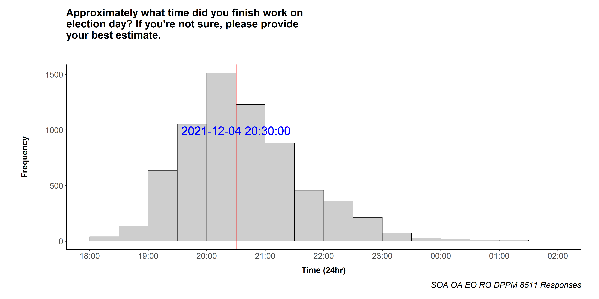
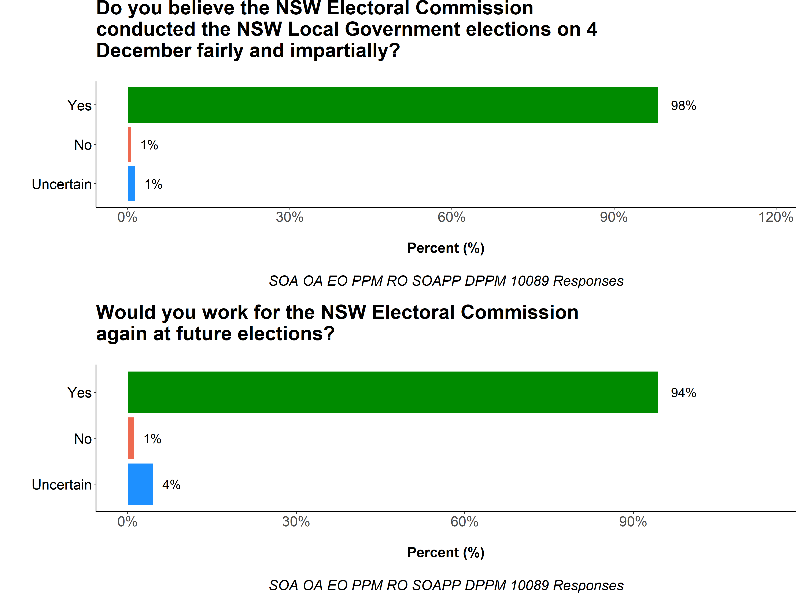
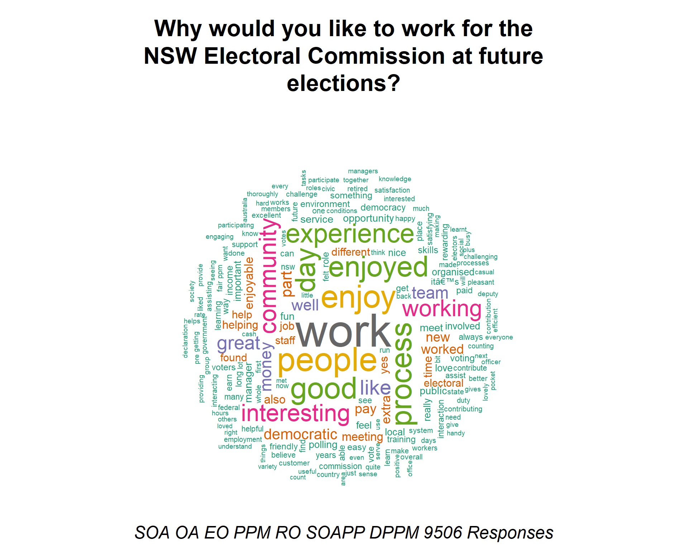
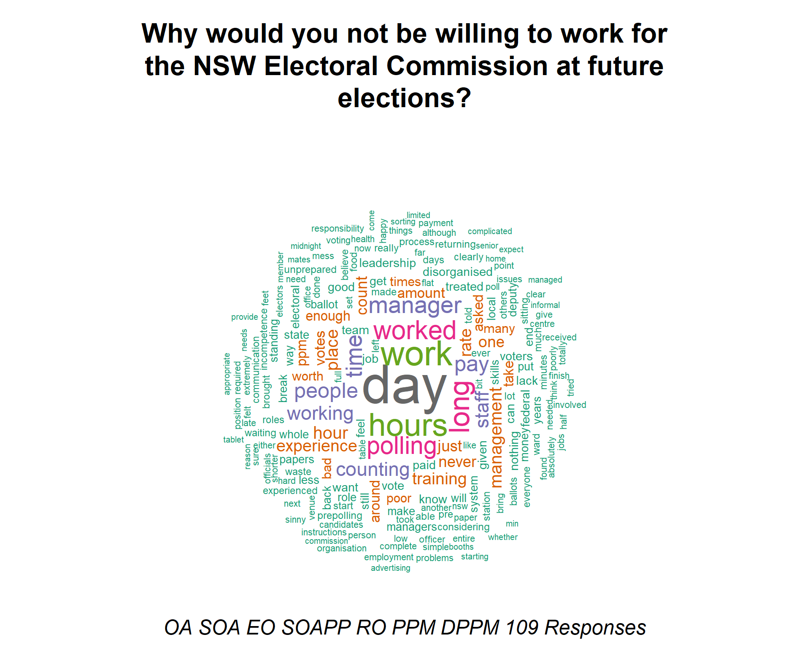

Executive Summary
The analysis in this report is based on the results of the Election Staff Survey, following the Local Government Election held on 4th December, 2021. The results use only complete survey responses.
Response rate
The survey was emailed to around 29 thousand temporary election staff members between 15/12/2021 and 22/12/2021. The overall response rate was approximately 47 per cent, with 10,089 completed surveys (a completed survey response rate of 35 per cent). The highest response rate was from PPM’s (over 50 per cent) and lowest for OA’s (less than 20 per cent; see Table 1).
Work health safety guidelines
The NSWEC implemented a new suite of WHS guidelines at this election, and the results show that most staff
reported compliance with the measures. Figure 1 shows that the vast majority of staff stated they finished
work before the mandated 11pm cut-off on election night. Although 12 per cent of respondents had some WHS
concerns (Q169), overall, the WHS and COVID-safe measures were well received. Ninety five per cent of
respondents were satisfied with the COVID-safe measures (Q2).

Figure 1. Number of staff finishing work at different times on Election Day. Each grey bar represents the number of staff finishing at a given time. The red line is the overall median finishing time (the middle value of all the finishing times). This plot shows that the vast majority of staff completed work prior to 11pm on election night.
Employee sentiment
Election staff overwhelmingly believed the election was run fairly (98%), and would work for the NSWEC at a future election (94%; Figure 2).
 Figure 2. Bar charts of overall elector sentiment.
 Figure 3. Word cloud of staff sentiment regarding working at the elections again.
 Figure 4. Word cloud of staff sentiment regarding not working at the elections again.
Overall employee satisfaction
Election staff were generally satisfied with how the election was run, with most questions across all topics having satisfaction ratings greater than 80 per cent, and dissatisfaction ratings less than 10 per cent (see Table of Contents: All satisfaction responses; Figure 5).
Figure 5. Bar-chart of combined satisfaction responses to survey questions across topics. Only ‘satisfaction’ type questions are included in this plot, and the EM/EM Office topic was only answered by three respondents.
Data use
The results of the SG2301 staff survey can be used to support the continuous improvement of NSWEC election processes. When using the survey results, please feel free to consult with the Data Analytics and Geospatial Services team for help with interpretation and analysis.